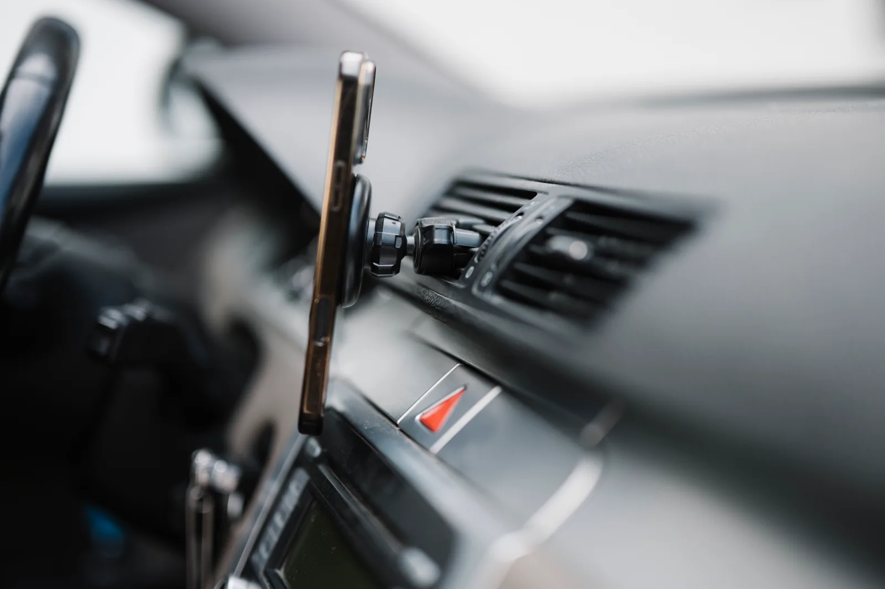
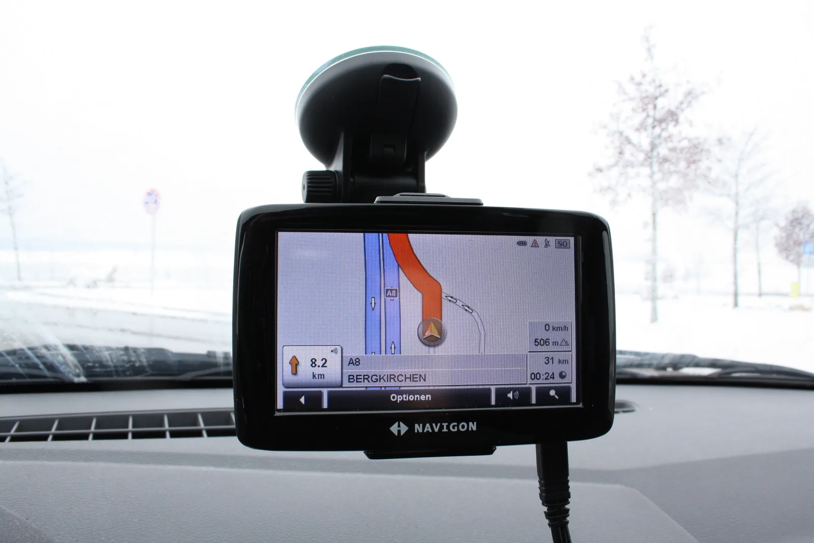
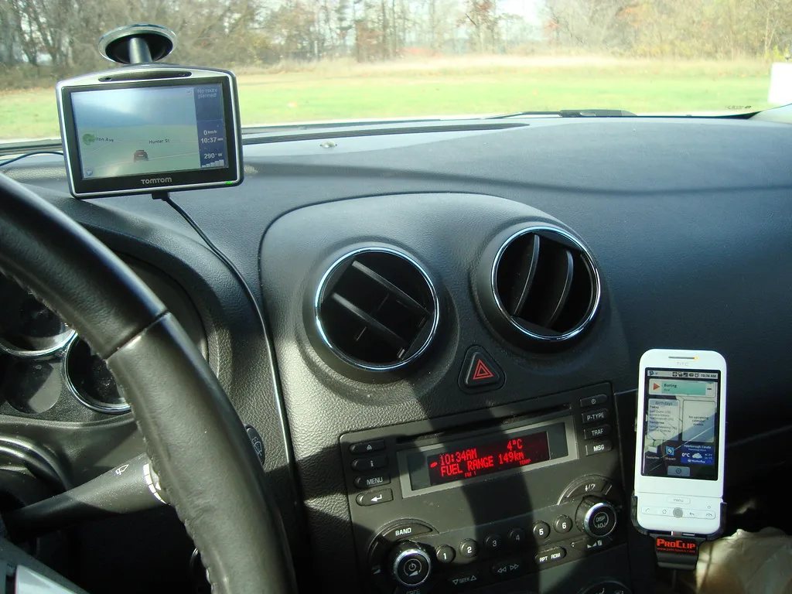
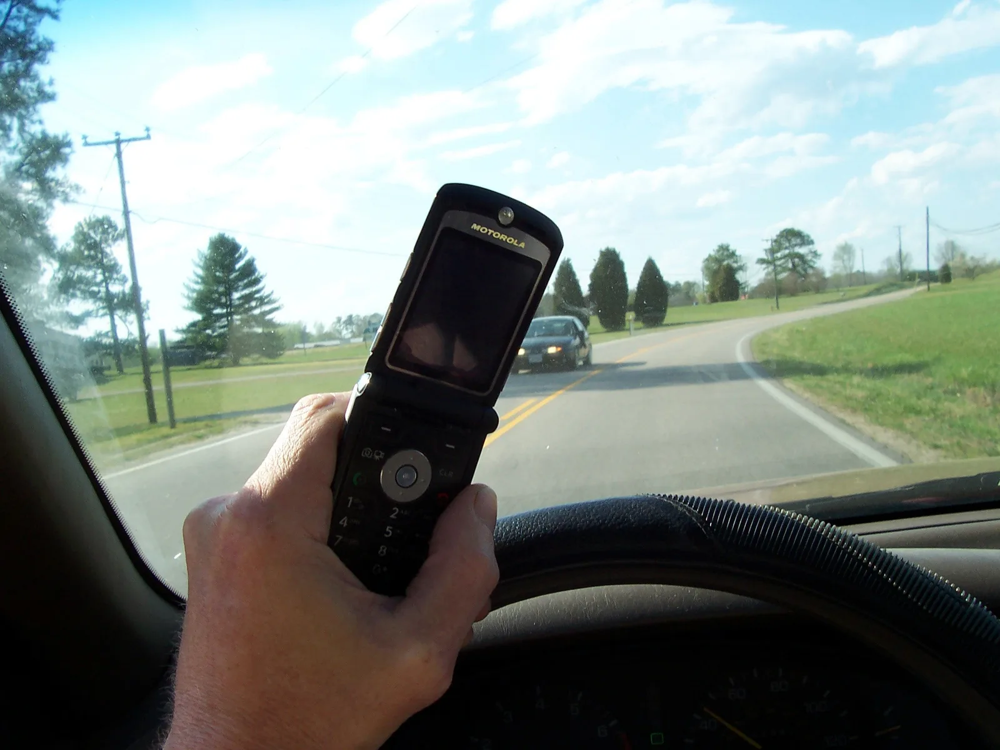

▲ 송풍구 거치는 합법이지만, 각도에 따라 전방 시야를 가리면 별도 단속 대상이 될 수 있다 ⓒ CarPrism
"거치대에 꽂아놨으니 괜찮겠지"라고 생각했다면 오산이다.
스마트폰을 손에 들고 조작하면 당연히 단속 대상이지만, 거치대에 제대로 꽂아둔 상태에서도 걸릴 수 있다. 관건은 거치 위치와 화면에 무엇이 표시되는지 두 가지다. 같은 '내비게이션 화면'이라도 지도를 보는 것과 유튜브를 보는 것은 법적으로 전혀 다르게 취급되고, 같은 '거치대'라도 어디에 붙였는지에 따라 단속 사유가 달라질 수 있다. 2026년 기준 도로교통법과 실제 단속 기준을 정리했다.
1. 법적 근거 — 도로교통법 제49조가 정한 세 가지 금지
운전 중 스마트폰과 관련된 금지 규정은 한 조항 안에 세 갈래로 나뉘어 있다. 도로교통법 제49조 제1항의 각 호가 그것이다.
| 근거 | 내용 |
|---|---|
| 제10호 휴대용 전화 사용 금지 | 운전 중 휴대전화를 손에 들고 사용하는 행위 자체를 금지 |
| 제11호 영상표시 금지 | 방송 등 영상물을 운전자가 볼 수 있는 위치에 표시하는 행위를 금지 |
| 제11의2호 영상표시장치 조작 금지 | 화면 종류와 무관하게 주행 중 장치를 조작하는 행위를 금지 |
즉 거치대에 꽂아두고 손을 대지 않았더라도, 화면에 금지된 영상이 표시되고 있다면 그 자체로 제11호 위반이 된다. 반대로 허용된 화면(지도 등)이라도 주행 중 손가락으로 목적지를 다시 입력하면 제11의2호 위반이다.
📍 세 조항의 공통 예외 — 정차 중일 것
세 조항 모두 "자동차등 또는 노면전차가 정지하고 있는 경우"를 공통 예외로 두고 있다. 신호 대기 등으로 완전히 멈춰 있을 때는 손에 들고 통화하거나, 화면을 조작하거나, 영상을 시청해도 이 조항 위반이 아니다.
2. 화면에 뭐가 떠 있느냐가 관건 — 내비게이션은 되는데 유튜브는 안 되는 이유
제11호(영상표시 금지)에는 구체적인 예외 목록이 있다. 아래 네 가지 영상은 주행 중이라도 화면에 표시할 수 있다.
✅ 주행 중에도 화면 표시가 허용되는 영상
· 지리안내 영상 또는 교통정보안내 영상 — 내비게이션 지도 화면
· 국가비상사태·재난상황 등 긴급 상황 안내 영상
· 운전 시 자동차의 좌우 또는 전후방을 보여주는 보조 영상 — 후방카메라, 서라운드뷰 등
· 자동차등이 정지하고 있는 경우 — 위 목록과 무관하게 모든 영상 표시 가능
이 네 가지에 해당하지 않는 화면 — 예를 들어 유튜브, OTT, DMB 방송, SNS 영상 등은 주행 중 화면에 뜨는 것 자체가 제11호 위반이다. 운전자가 실제로 보고 있었는지와 무관하게, 운전석에서 볼 수 있는 위치에 재생 중이라는 사실만으로 단속 대상이 될 수 있다.

▲ 지도·경로안내 화면은 명시적 예외 조항에 해당해 주행 중에도 표시할 수 있다 ⓒ CarPrism
📍 내비 화면이라도 조작은 별개
지도 화면을 보는 것 자체는 허용되지만, 주행 중 목적지를 다시 검색하거나 경로를 수정하는 조작은 제11의2호(조작 금지) 적용 대상이다. 예외 목록에 있는 화면이라 하더라도 조작은 반드시 정차한 뒤에 해야 한다.
3. 거치 위치는 왜 중요한가 — 전방 시야와 안전운전 의무
도로교통법 제49조는 화면에 '무엇이' 표시되는지를 규정할 뿐, 거치대를 '어디에' 붙여야 하는지 직접 정하지는 않는다. 그렇다고 위치가 무관한 것은 아니다.
거치대가 전방 시야를 가리는 위치에 있으면, 별도로 도로교통법 제48조(안전운전 의무) 위반으로 단속될 수 있다. 이 조항은 "다른 사람에게 위험과 장해를 주는 방법으로 운전하여서는 안 된다"는 포괄적 안전운전 의무를 규정하는데, 실무에서는 시야를 가리는 부착물·거치대도 '안전운전 불이행'으로 처리되는 사례가 있다.
| 거치 위치 | 특징 | 유의점 |
|---|---|---|
| 윈드실드(앞유리) 흡착판 방식 | 시선 이동이 가장 적음 | 운전석 정면·시야 중앙에 걸치면 전방 시야 방해 소지가 가장 큼 |
| 대시보드 접착·거치식 | 설치가 간편 | 높은 위치일수록 시야를 가릴 수 있어 낮고 측면에 가까운 자리가 권장됨 |
| 송풍구(에어벤트) 클립·자석 방식 | 계기판과 가까워 시선 이동 최소화 | 송풍구 위치가 낮으면 기어봉·손 조작에 걸리적거릴 수 있음 |

▲ 대시보드 낮은 위치, 조수석 쪽에 가까운 거치는 전방 시야를 상대적으로 덜 가린다 ⓒ CarPrism
📍 안전운전 불이행 범칙금·벌점
도로교통법 제48조 위반(안전운전 의무 불이행)은 승용차 기준 범칙금 4만원, 벌점 10점이 부과된다. 영상표시장치 위반(6만~7만원, 벌점 15점)보다는 낮지만, 거치 위치 자체가 별도 단속 사유가 될 수 있다는 점은 기억해둘 필요가 있다.
4. 2026년 단속 방식 변화 — AI 영상분석으로 확대
과거에는 경찰관이 직접 목격해야만 단속이 가능했다. 옆 차선에서 육안으로 확인하거나, 정지 후 적발하는 방식이었다.
2026년부터는 AI 영상분석 단속이 전국으로 확대되고 있다. 도로 위 무인단속 카메라가 차량 내부를 촬영해 운전자가 휴대전화를 손에 들고 있는지, 화면을 조작하고 있는지를 자동으로 판별하는 방식이다. 손에 들지 않고 거치대에 꽂아둔 채 화면만 보는 경우까지 구분해낼 수 있는지는 카메라 성능과 각도에 따라 달라지지만, 단속 빈도 자체가 늘어난다는 점은 분명하다.
| 위반 행위 | 근거 | 범칙금(승용차) | 벌점 |
|---|---|---|---|
| 휴대전화 손에 들고 사용 | 제49조 제1항 10호 | 6만원(승합 7만원) | 15점 |
| 주행 중 볼 수 있는 위치에 영상표시 | 제49조 제1항 11호 | 6만원(승합 7만원) | 15점 |
| 주행 중 영상표시장치 조작 | 제49조 제1항 11의2호 | 6만원(승합 7만원) | 15점 |
| 안전운전 의무 불이행(시야 방해 등) | 제48조 제1항 | 4만원(승합 5만원) | 10점 |
✅ 벌점이 쌓이면 생기는 일
· 벌점 40점 이상 — 면허 정지 대상
· 1회 위반으로 40점을 넘기진 않지만, 다른 위반과 누적되면 정지 기준에 빠르게 도달할 수 있음
· 범칙금은 통고받은 날로부터 10일 이내 납부하면 별도 형사처벌 없이 종결됨
운전 중 법규 위반 관련 벌점·범칙금 기준은 계속 조정되는 만큼, 최신 통계는 도로교통공단에서 확인할 수 있다. 도로교통공단 안전운전의무 안내 바로가기

▲ 거치대 유무와 무관하게, 손에 들고 조작하는 순간 제10호 위반이 성립한다 ⓒ CarPrism
5. 올바른 거치 방법 — 단속을 피하기보다 위험을 줄이는 기준
단속을 피하는 게 목적이 아니라, 애초에 시야를 가리지 않는 게 핵심이다. 아래 체크포인트를 거치대 설치 전에 확인해두면 좋다.
✅ 거치대 설치 전 확인할 것
· 거치대가 운전석 정면 시야 중앙을 가리지 않는 위치인지 확인 — 조수석 쪽으로 살짝 치우친 대시보드·송풍구가 무난
· 계기판·룸미러·사이드미러 시야를 방해하지 않는지 확인
· 급제동·급회전 시 거치대에서 스마트폰이 빠지지 않는지 고정력 점검
· 화면 조작(목적지 재입력, 음악 변경 등)은 반드시 정차 후에 하는 습관을 들일 것
· 통화가 필요하면 블루투스 핸즈프리·차량 내장 통화 기능을 우선 사용

▲ 계기판보다 낮게, 운전석 시야 중앙을 벗어난 위치에 고정하면 전방 시야 방해 소지를 줄일 수 있다 ⓒ CarPrism
거치대 자체의 합법성보다, 운전 중 화면을 얼마나 오래 응시하는지가 실제 사고 위험과 직결된다는 점도 기억할 필요가 있다. 지도 화면을 보는 것이 허용된다고 해서 장시간 화면을 들여다봐도 된다는 뜻은 아니다.
6. 요약
운전 중 스마트폰 거치대 관련 규정은 도로교통법 제49조 세 개 조항으로 나뉜다. 손에 들고 쓰면 제10호, 금지된 영상을 화면에 표시하면 제11호, 화면 종류와 무관하게 주행 중 조작하면 제11의2호 위반이다.
내비게이션·후방카메라 화면은 명시적으로 허용된 예외지만, 유튜브·OTT 같은 영상물은 거치대에 꽂아만 둬도 위반이 될 수 있다. 조작은 화면 종류와 무관하게 정차 중에만 해야 한다.
거치 위치도 무관하지 않다. 법이 위치를 직접 규정하진 않지만, 전방 시야를 가리면 안전운전 의무 불이행(제48조, 범칙금 4만원·벌점 10점)으로 별도 단속될 수 있다. 2026년부터 AI 영상분석 단속이 전국으로 확대되는 만큼, 영상표시장치 위반(범칙금 6만~7만원·벌점 15점) 적발 빈도도 늘어날 전망이다.